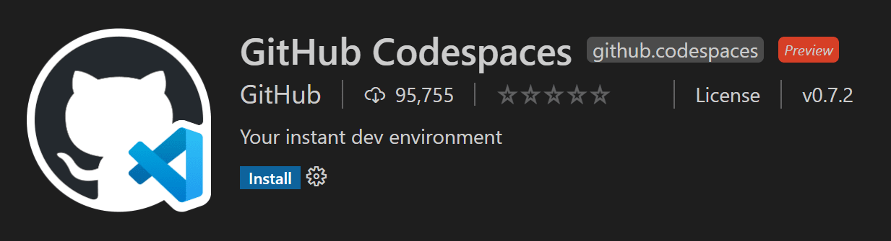
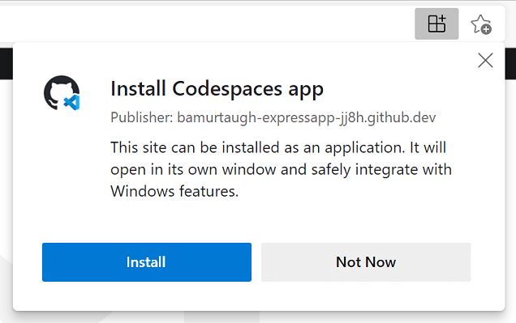
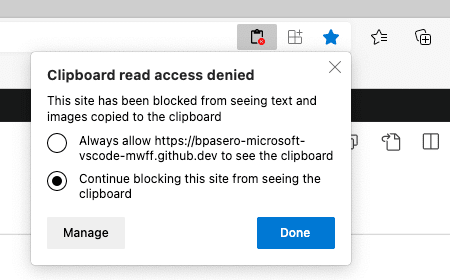
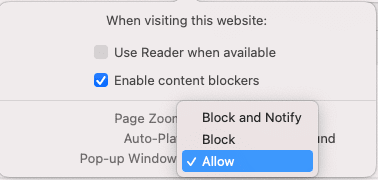

GitHub Codespaces
GitHub Codespaces 为任何活动提供云驱动的开发环境——无论是长期项目，还是短期任务（例如审查拉取请求）。你可以从 Visual Studio Code 或基于浏览器的编辑器中使用这些环境。

环境
环境是 GitHub Codespaces 的"后端"部分。所有与软件开发相关的计算都在这里进行：编译、调试、恢复等。当你需要处理新项目、接手新任务或审查 PR 时，只需启动一个云托管环境，GitHub Codespaces 会自动正确配置它。它会自动配置你处理项目所需的一切：源代码、运行时、编译器、调试器、编辑器、自定义 dotfile 配置、相关的编辑器扩展等。
自定义
GitHub Codespaces 可以按项目进行完全自定义。这是通过在项目仓库中包含一个 devcontainer.json 文件来实现的，类似于 VS Code 的开发容器开发。
自定义示例包括：
- 设置要使用的基于 Linux 的操作系统。
- 自动安装各种工具、运行时和框架。
- 转发常用端口。
- 设置环境变量。
- 配置编辑器设置和安装首选扩展。
请参阅配置 Codespaces 文档，了解特定于 codespace 的 devcontainer.json 设置。
每用户的 Dotfile 配置
Dotfiles 是以点 (.) 开头的文件名。它们通常包含应用程序的配置信息，可以控制终端、编辑器、源代码控制和其他各种工具的行为。.bashrc、.gitignore 和 .editorconfig 是开发人员常用的 dotfile 示例。
你可以在创建 codespace 时指定一个包含你的 dotfile 的 GitHub 仓库、文件的目标位置以及安装命令。
请参阅个性化 Codespaces 文档，了解如何将你的 dotfile 配置添加到 codespace 中。
入门
以下入门主题适用于两种 GitHub Codespaces 客户端。这些将快速引导你完成登录 GitHub Codespaces、创建你的第一个 codespace 并使用你偏好的客户端连接它：
- 在 VS Code 中使用 Codespaces - 使用 GitHub Codespaces 扩展来连接并在你的环境中工作。
- 在浏览器中使用 Codespaces - 通过基于浏览器的编辑器连接你的 codespace。
扩展作者
VS Code 扩展 API 隐藏了远程运行的大多数实现细节，因此许多扩展无需任何修改即可在 GitHub Codespaces 环境中正常工作。但是，我们建议你在 codespace 中测试你的扩展，以确保其所有功能按预期工作。有关详细信息，请参阅支持远程开发和 GitHub Codespaces 一文。
基于浏览器的编辑器
你还可以完全在浏览器中获得免费、轻量级的 Visual Studio Code 体验。基于 Web 的编辑器让你可以安全快速地浏览 GitHub 上的源代码仓库，并进行轻量级代码更改。你可以在编辑器中打开任何仓库、分支或拉取请求，该编辑器具有 VS Code 的许多功能，包括搜索和语法高亮。如果你想运行或调试代码，可以切换到云托管环境或 VS Code 桌面版。
要访问这个基于浏览器的编辑器，你可以转到 github.com 上的仓库并按 kbstyle(.)（句号键），或者将仓库的 URL 更改为 github.dev/org/repo，将 github.com 替换为 github.dev。
限制：如果你在浏览器的无痕模式下运行或启用了广告拦截器，则可能无法使用基于 Web 的编辑器。
>注意：此编辑器目前处于技术预览阶段。你可以立即试用，并在 https://github.co/browser-editor-feedback 提供反馈。
已知限制和适应措施
在使用 Codespaces，特别是在 Web 上使用 VS Code 时，需要注意某些限制。其中一些限制有变通方案或适应措施，以提供一致的开发体验。
对于几个问题（特别是键盘快捷键或在桌面端有变通方案的问题），你可以将 Codespace 安装并用作渐进式 Web 应用程序 (PWA)。

| 问题 | 原因 | 变通方案 | ||
|---|---|---|---|---|
| - | - | - | ||
kbstyle(Ctrl+Shift+P) 在 Firefox 中无法启动命令面板。 | kbstyle(Ctrl+Shift+P) 在 Firefox 中被保留。 | 使用 kbstyle(F1) 启动命令面板。 | ||
| 某些默认键盘快捷键（用于调试）在 Web 上不同。 | 由于浏览器可能已经为这些键盘快捷键注册了操作，我们调整了 VS Code 在 Web 上的默认值。 | 使用调整后的默认值。它们会在调试操作的工具提示悬停时显示。
| ||
kbstyle(F11) 在 macOS 的 Web 或桌面版中都无法用于调试。 | 这是一个已知的、非浏览器特定的限制。更多信息可以在问题 #5102 中找到。 | 在 macOS 上禁用 kbstyle(F11) 显示桌面。
| ||
kbstyle(Ctrl+N) 创建新文件在 Web 中不起作用。 | kbstyle(Ctrl+N) 会改为打开新窗口。 | kbstyle(Ctrl+N) 创建新文件在桌面版中有效。 | ||
kbstyle(Ctrl+W) 关闭编辑器在 Web 中不起作用。 | kbstyle(Ctrl+W) 会在浏览器中关闭当前标签页。 | kbstyle(Ctrl+W) 在桌面版中有效。 | ||
kbstyle(Ctrl+Shift+B) 不会在浏览器中切换收藏夹栏。 | Codespaces 会覆盖此快捷键并将其重定向到命令面板中的"构建"菜单。 | 目前没有变通方案。 | ||
| 从 VS Code 拖放文件到 Codespace（反之亦然）不起作用。 | 你可以在问题 #115535 中查看更多背景信息。 | 有几个选项：
| ||
| Angular 应用调试在 Web 上不受支持。 | 在浏览器中运行的代码出于安全原因无法以调试模式启动另一个浏览器实例。 | 你有几个选择：
| ||
| 从浏览器下载没有扩展名的文件会自动添加 ".txt" | 这是 Chrome 和 Edge 的行为方式。 | 背景信息和潜在的未来解决方案在问题 #118436 中。 | ||
| 当你从远程（包括 Codespaces）下载文件时，可执行位等属性会被移除。 | 背景信息和潜在的未来解决方案可以在问题 #112099 中找到。 | 目前没有变通方案。 | ||
尝试从 Codespace 下载某些文件夹时，你可能会看到提示"Your_codespace_name 无法打开此文件夹，因为它包含系统文件"。 | 用户代理可以自由地对敏感目录施加限制级别。更多信息在此规范和 Chromium 的阻止列表中。 | 除了规范和阻止列表之外，没有其他变通方案。 | ||
手动访问 http://localhost:forwarded_port 无法从 Web 中的 Codespace 访问转发端口。 | 这是基于 Codespaces 如何处理端口转发并为 Web 生成正确 URL。 | 从端口转发通知中单击链接打开你的应用，或者单击端口视图中的地球图标，两者都会提供正确生成的链接。更多信息在 Codespaces 文档中。 |
某些扩展在 Web 中的行为不同
| 扩展 | 问题 / 原因 | 变通方案 | ||
|---|---|---|---|---|
| - | - | - | ||
键盘快捷键与浏览器快捷键冲突的扩展，例如 Git Graph，它使用 kbstyle(Ctrl+R) 来刷新。 | 键盘快捷键可能与现有的浏览器快捷键冲突，例如 kbstyle(Ctrl+R) 在 Safari 中刷新窗口。 | 你可以使用基于桌面版（而非基于 Web）的 Codespace 来充分利用你的键盘快捷键。不同的浏览器也可能有不同的行为（你可以在 Chrome 中刷新 Git Graph）。 | ||
| 语言包，例如 Japanese Language Pack for Visual Studio Code | 语言包扩展目前在基于 Web 的 Codespaces 中不受支持。 | 你可以使用基于桌面版的 Codespace 来使用语言包并配置显示语言。 | ||
| Bracket Pair Colorizer 2 | 它无法在浏览器中工作，因为它引入了不易修复的安装位置依赖。 | 使用 Bracket Pair Colorizer。 | ||
| 浏览器调试器，例如 Debugger for Firefox。 | 需要 UI/桌面扩展主机的扩展不会在浏览器中加载。 | 你可以在本地 VS Code（未连接到 Codespaces）中使用这些扩展。或者，当你的应用从 Codespace 运行时，你可以使用替代方案，例如 Chrome DevTools 来检查元素和设置断点。 | ||
| 用于打开浏览器的扩展，例如 open in browser。 | 需要 UI/桌面扩展主机的扩展不会在浏览器中加载。 | 如果可能，使用替代扩展，例如 Live Server。 | ||
| Project Manager | Project Manager 依赖于同步自定义 projects.json 文件，目前不支持。 | 你可以在桌面版 Codespaces 或本地 VS Code 中使用该扩展来保存和管理你的项目，因为这些选项不需要同步自定义文件。 | ||
| 依赖 Chrome 的扩展，例如 Protractor Test Runner 和 Browser Preview。 | Chrome 不包含在 Codespace 中。 | 尝试寻找替代体验，或者你可以在本地 VS Code（未连接到 Codespaces）中在你的项目上使用这些扩展。 | ||
| Flutter（以及整体的 Flutter 开发） | 由于 Docker 容器和 Codespaces 的性质，Flutter 工作流有几个方面受限。
| 你可以使用本地 VS Code 进行 Flutter 开发。 | ||
| LaTeX Workshop | 该扩展提供三种功能来帮助 LaTeX 写作：1) 显示常用命令的一组视图，2) PDF 预览器，以及 3) 语言功能，如代码片段和 IntelliSense。该扩展可以相当完整地使用，但存在一些 Web 或安全限制。 | 以下变通方案解决了视图和预览器功能领域的限制：
| ||
| Git Graph | 某些 Git Graph webview 功能在 Codespaces 中可能受限。例如，在提交文件与 Git Graph webview 之间切换可能会导致 webview 变空白。 | 你可以在 VS Code 桌面版中完全使用 Git Graph。 | ||
| 其他远程开发扩展（WSL、Dev Containers、Remote - SSH）无法在 Codespace 中安装。 | Codespace 已经是一个远程上下文。 | 如果你想在另一个远程上下文中运行（例如 WSL 或远程 SSH 计算机），请打开 VS Code 桌面版（未连接到 Codespace）并启动其他远程扩展之一。如果你想使用自定义开发容器，你可以在 Codespaces 和 Dev Containers 中使用相同的 .devcontainer。 | ||
| My_Favorite_Extension 不起作用且未在上面列出。 | 还有其他一些问题可能会阻止功能在远程上下文中按预期工作。 | 在某些情况下，你可以使用其他命令来解决该问题，但在其他情况下，可能需要修改扩展。查看远程扩展提示以了解常见的远程问题及其解决技巧。 |
常见问题
为什么某个扩展无法在浏览器中安装
有少数扩展具有内置假设或需要在桌面上运行。例如，当扩展访问来自桌面 VS Code 安装的文件时，或者当扩展依赖必须运行在桌面环境中的可执行文件时。当你尝试在浏览器中安装这样的扩展时，你会被告知该扩展不可用。
注意 这样的扩展仍然可以在从桌面运行的 VS Code 连接到 Codespace 时使用。
如何允许 VS Code 访问我的剪贴板进行读取
在某些情况下，VS Code 可能会要求你授予读取剪贴板的权限。你应该能够通过浏览器的设置（搜索"网站权限"）或通过查看地址栏右侧的此选项来授予剪贴板访问权限：

授予 VS Code 剪贴板访问权限后，你可以重试该操作。
如何允许 VS Code 始终打开新标签页和窗口
有时，浏览器出于安全预防措施会阻止 VS Code 打开新标签页或窗口。如果发生这种情况，VS Code 将检测到阻止操作并显式提示用户。但是，你可以通过浏览器导航栏中的上下文菜单打开网站设置并允许弹窗，来允许 VS Code 始终打开新窗口和标签页。

如何允许浏览器中的 VS Code 访问本地文件和文件夹
在浏览器中从 VS Code 打开本地文件和文件夹需要浏览器支持文件系统访问 API。目前，Microsoft Edge 和 Google Chrome 都提供了这种级别的支持。如果你想在浏览器中使用 VS Code 时访问本地文件和文件夹，请考虑切换到这两个浏览器之一。
问题或反馈
如果你有问题，可以查阅 GitHub Codespaces 故障排除指南。如果你想提供反馈，可以在 GitHub Codespaces 讨论区提交问题。